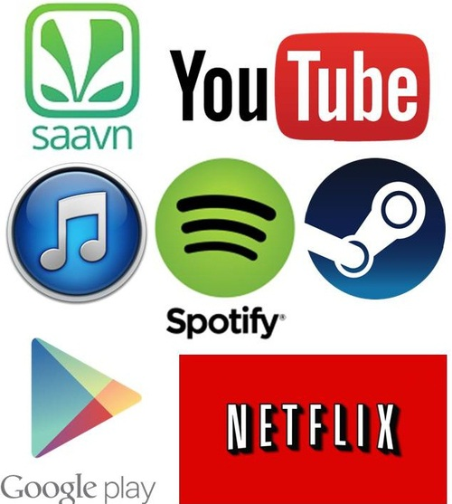

Download Services
The Information Age has had a huge impact on information itself! Almost everything has a digital format now.

Many companies and organizations have therefore started to offer services which allows the user(s) to rent or buy products like movies, music and games via the internet. The users can download them and save it onto their storage device. Few companies which offer such services are, Steam, iTunes, Netflix, YouTube, Saavn, Spotify and Google Play
These online services are a huge hit among all sorts of age groups. They have a lot elements which make the user find them amazing. Movies, music albums or video games that are not available at stores near the user can be easily downloaded using these services. After downloading the user can keep it with them forever, if they have bought them. They can use these services wherever and whenever they want provided there is a secure and stable internet connection. Also users are bombarded with so many collections and choices.